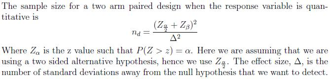

The sample size formula for a quantitative response variable that is measured once, using a 2 arm paired design is provided below. The analysis we use when the data is paired relies on first calculating the differences between the responses for each pair. The following are several assumptions that are necessary to derive the sample size formula.
- It must be reasonable to regard the differences as a random sample from some large population.
- The population distribution of the differences must be normal.

-- ErinEsp - 06 Mar 2010